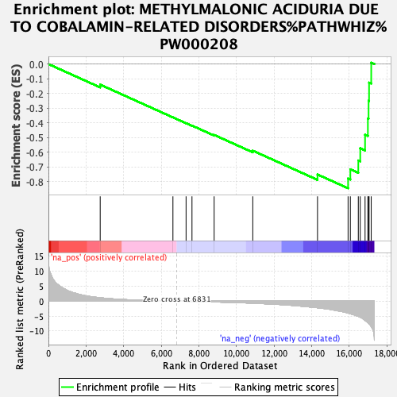
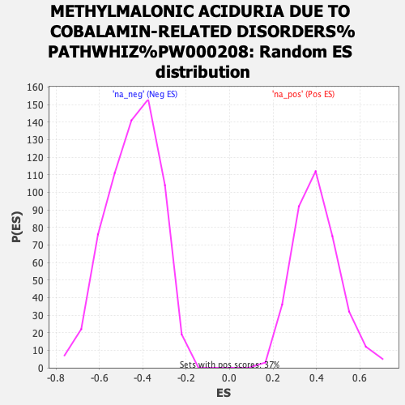

| | | Dataset | ranked_tn_list |
| Phenotype | NoPhenotypeAvailable |
| Upregulated in class | na_neg |
| GeneSet | METHYLMALONIC ACIDURIA DUE TO COBALAMIN-RELATED DISORDERS%PATHWHIZ%PW000208 |
| Enrichment Score (ES) | -0.8455407 |
| Normalized Enrichment Score (NES) | -1.9021502 |
| Nominal p-value | 0.0 |
| FDR q-value | 0.0021038798 |
| FWER p-Value | 0.061 |
Table: GSEA Results Summary

Fig 1: Enrichment plot: METHYLMALONIC ACIDURIA DUE TO COBALAMIN-RELATED DISORDERS%PATHWHIZ%PW000208
Profile of the Running ES Score & Positions of GeneSet Members on the Rank Ordered List
| SYMBOL | RANK IN GENE LIST | RANK METRIC SCORE | RUNNING ES | CORE ENRICHMENT | | 1 | ACACA | 2755 | 1.140 | -0.1400 | No |
| 2 | ACSS3 | 6625 | 0.021 | -0.3629 | No |
| 3 | PCCB | 7325 | -0.056 | -0.4023 | No |
| 4 | HIBCH | 7639 | -0.097 | -0.4188 | No |
| 5 | ABAT | 8818 | -0.265 | -0.4823 | No |
| 6 | MCEE | 10875 | -0.681 | -0.5897 | No |
| 7 | ECHS1 | 14319 | -2.200 | -0.7517 | No |
| 8 | PCCA | 15946 | -3.980 | -0.7793 | Yes |
| 9 | DBT | 16066 | -4.190 | -0.7163 | Yes |
| 10 | DLD | 16490 | -5.067 | -0.6564 | Yes |
| 11 | BCKDHB | 16593 | -5.361 | -0.5730 | Yes |
| 12 | MLYCD | 16850 | -6.434 | -0.4806 | Yes |
| 13 | ALDH6A1 | 17000 | -7.122 | -0.3706 | Yes |
| 14 | ACAT1 | 17037 | -7.377 | -0.2498 | Yes |
| 15 | ACSS1 | 17063 | -7.517 | -0.1261 | Yes |
| 16 | ACADM | 17178 | -8.543 | 0.0096 | Yes |
Table: GSEA details [plain text format]

Fig 2: METHYLMALONIC ACIDURIA DUE TO COBALAMIN-RELATED DISORDERS%PATHWHIZ%PW000208: Random ES distribution
Gene set null distribution of ES for METHYLMALONIC ACIDURIA DUE TO COBALAMIN-RELATED DISORDERS%PATHWHIZ%PW000208